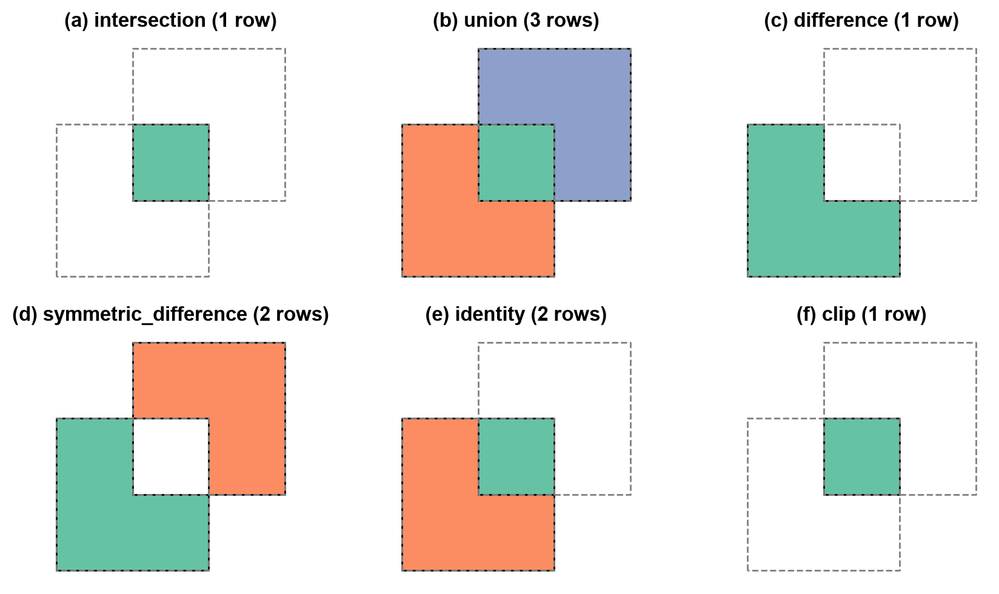
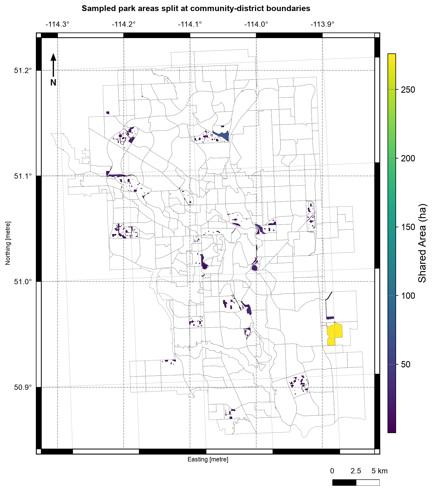

4.4. Vector Overlay Operations#
4.4.1. Learning objectives#
By the end of this section, you should be able to:
distinguish an overlay from a spatial join;
choose intersection, union, difference, symmetric difference, or identity from a question, and distinguish an overlay from
clip;explain how an overlay builds new geometry and why output rows multiply;
state the area identity that each operation must satisfy;
prepare compatible polygon layers: one projected CRS, valid geometry, and no unnoticed slivers;
control which geometry types an overlay keeps; and
validate area, identifiers, and geometry quality after an overlay.
Section goal
Use Calgary parks, community districts, and the city boundary to see how an overlay creates new geometries at shared boundaries. The source layers remain unchanged, and every derived area is measured in a projected CRS.
4.4.2. Overlay is not a spatial join#
A spatial join attaches attributes while retaining the geometry of the left feature. An overlay computes new geometry where boundaries intersect, so one input feature may become many output features. Overlays behave like set operations on areas, summarized in Table 4.16:
Operation |
Set logic |
Interpretation |
|---|---|---|
|
A AND B |
Keep only the shared area of two layers |
|
A OR B |
Keep all areas and split at every boundary |
|
A AND NOT B |
Keep the first layer after removing the second |
|
A XOR B |
Keep areas belonging to exactly one layer |
|
A, split by B |
Keep all of the first layer, split where the second crosses it |
Use clip when the question is simply “keep the part inside this mask”; use an
overlay when the attributes and boundaries of both polygon layers matter.
4.4.3. How an overlay builds new geometry#
A spatial join leaves geometries untouched; an overlay cuts them. Given two polygon layers A and B, an overlay finds every place where a boundary of A crosses a boundary of B, splits the polygons at those crossings, and sorts the resulting pieces by where they lie: only in A, only in B, or in both. Each operation in the table above is a rule for which pieces to keep. Every kept piece inherits the attributes of the A feature and the B feature it came from, so a piece found only in A has nulls in B’s columns, and the nulls record where the piece came from.
This has three consequences for the output:
Rows multiply. A feature crossed by several boundaries becomes several pieces, so the output can have more rows than either input, and an identifier repeats across rows.
Areas change. Pieces are new geometries, so their areas are measured after the overlay and never copied from an input column.
Columns combine. The output carries both layers’ attributes, and clashing names get
_1and_2suffixes.differencekeeps only A’s columns, because B contributes no pieces.
Because the pieces tile the combined area, every operation obeys an exact area identity, listed in Table 4.17. The identities hold when the features within each layer do not overlap one another, and they are the cheapest way to validate an overlay.
Operation |
Pieces kept |
Area identity |
|---|---|---|
|
In both A and B |
area(A ∩ B) is at most min(area A, area B) |
|
In A only |
area(A − B) = area(A) − area(A ∩ B) |
|
In A, in B, or in both |
area(A ∪ B) = area(A) + area(B) − area(A ∩ B) |
|
In exactly one layer |
area(A △ B) = area(A) + area(B) − 2 · area(A ∩ B) |
|
Every piece of A, split by B |
Total area = area(A) |
clip(gdf, mask) is the lightweight cousin of intersection: it keeps the part of gdf
inside the mask and returns only gdf’s columns, without the mask’s attributes. The toy
layers below are two 4 by 4 squares that share a 2 by 2 corner.
operation rows area attribute columns
intersection 1 4.0 ['a', 'b']
union 3 28.0 ['a', 'b']
difference 1 12.0 ['a']
symmetric_difference 2 24.0 ['a', 'b']
identity 2 16.0 ['a', 'b']
clip 1 4.0 ['a']
difference area identity holds: True
union area identity holds: True
symmetric_difference area identity holds: True
identity area identity holds: True
| a | b | |
|---|---|---|
| 0 | A | B |
| 1 | A | NaN |
| 2 | NaN | B |
The areas confirm the identities. Each square has area 16 and they share an area of 4,
so union is 16 + 16 − 4 = 28, difference is 16 − 4 = 12, symmetric_difference is
16 + 16 − 2 × 4 = 24, and identity returns A’s own 16. In the union table, row 0 has
both a and b (the shared corner), row 1 only a, and row 2 only b: the nulls
record which layer each piece came from.


Fig. 4.7 The five overlay operations and clip applied to two overlapping squares; each colour is one output row and the dashed lines are the input boundaries.#
In Fig. 4.7, each colour is one output row, and the dashed lines are the input boundaries. union
returns three pieces, and a null in a or b marks a piece that exists in only one
layer. difference keeps A’s shape minus the shared corner and only A’s column.
symmetric_difference keeps the two non-shared pieces, and identity keeps all of A
split at B’s boundary, so its pieces add up to A. clip returns the same shape as
intersection but without B’s attribute. Overlay is also order-sensitive: difference
removes the second layer from the first, and swapping the arguments answers a different
question.
4.4.3.1. Which geometry types an overlay keeps#
Two polygons that only touch share a line or a point, not an area. An overlay can
therefore produce a piece of lower dimension, such as a LineString along a shared edge.
By default (keep_geom_type=True) GeoPandas [Jordahl et al., 2020] drops pieces whose geometry type differs from
the input, which suits area questions because those pieces have zero area. With
keep_geom_type=False they are kept, so no piece is dropped silently, and the row count
rises accordingly.
keep_geom_type=True rows=0 types=[]
keep_geom_type=False rows=1 types=['LineString']
4.4.4. Load the layers#
The next cell loads the three polygon layers [Open Calgary: The City of Calgary Open Data Portal, 2026]: a deterministic 300-feature sample of parks,
the community districts, and the city boundary. It also creates metric copies, marked
with the suffix _m, in a local UTM CRS [Snyder, 1987].
4.4.5. Prepare compatible inputs#
An overlay is only as reliable as its inputs. Check four conditions before running one:
One CRS. GeoPandas warns on a CRS mismatch but still computes, and the result is meaningless. Assert that the CRSs are equal instead of relying on the warning.
A projected CRS. Pieces are measured after the overlay, so areas need metres, as in S02.
Valid geometry. An invalid ring can make the overlay fail or return a misleading result, as the bow-tie in S01 showed. Repair the feature instead of dropping it.
No unnoticed slivers. Layers digitised separately rarely agree exactly on a shared boundary. An offset of a millimetre turns a shared edge into a thin overlap, and the overlay returns it as a real polygon of almost zero area. Slivers inflate row counts and are not real features, so detect them by area or thinness and document the threshold you use.
The toy layer below should share an edge with layer A but is offset by one millimetre.
intersection rows: 1
sliver area: 0.0040 m², width: 0.001 m, height: 4.0 m
valid: True (nothing flags it as a problem)
4.4.5.1. Prepare the Calgary layers#
A full parks layer can be expensive to overlay against every district while learning, so this example uses a deterministic 300-feature sample. The sample is for understanding the operation, not for estimating Calgary-wide park area. One district polygon has a self-intersecting ring, which would make overlay results unreliable, so the repair step below fixes it before any overlay runs. Section S06 covers this repair pattern in detail.
parks EPSG:32611 {'MultiPolygon': 300}
invalid: 0
communities EPSG:32611 {'MultiPolygon': 313}
invalid: 1
city boundary EPSG:32611 {'MultiPolygon': 1}
invalid: 0
As in S01, every layer is stored as MultiPolygon. The invalid ring
is in the community layer (1 of 313 districts) and the park sample has none; the repair
keeps all 313 districts instead of dropping the faulty one.
4.4.7. Difference and union#
difference(parks, city_boundary) keeps the sampled park pieces outside the city
boundary. Reversing the arguments answers a different question. union creates a
combined partition and carries attributes from both layers; it is useful for
partitioning space, but it usually creates more rows than either input.
park pieces inside city: 299
park pieces outside city: 2
union rows: 35
Intersection and difference against the same mask split each park into complementary pieces, so their areas should add up to the input area.
inside + outside: 1,158.9 ha, input: 1,158.9 ha
relative difference: -2.6e-15
The two results are complementary to rounding error (a relative difference of −2.6 × 10⁻¹⁵), so the area identity for splitting by a mask holds to machine precision. Only 2 of the 301 pieces lie outside the city, so almost all the sampled parks are inside it.
4.4.8. Symmetric difference and identity#
symmetric_difference keeps the areas that belong to exactly one layer — useful for
questions such as “which parts of these two planning zones do not overlap?”.
identity keeps the entire first layer but splits it wherever the second layer’s
boundaries cross, attaching the second layer’s attributes to the pieces inside it.
Identity answers “give me all of layer A, tagged by layer B”. The example below
uses a small district subset, so most sampled parks fall outside those districts;
with the full district layer, the pieces would carry district attributes wherever
they overlap.
symmetric difference rows: 1
identity rows: 25
identity keeps park rows with and without a district: 25 without, 0 with


Fig. 4.8 Sampled Calgary park pieces after intersection with community districts, colored by area in hectares; district boundaries in grey. Data: City of Calgary Open Data.#
In Fig. 4.8, each shaded polygon is a piece of a sampled park cut at a district boundary. Almost all pieces are small (dark purple, under about 50 ha), while one large piece near the eastern edge, close to 275 ha on the colour scale, stretches the colours for everything else. The pieces cluster in a few parts of the city instead of spreading evenly, because the sample is the first 300 parks by asset code and not a random draw, which is another reason not to estimate Calgary-wide park area from it.
4.4.9. Choosing the right operation#
Only the shared area matters →
intersectionA complete partition of both layers →
unionEverything in A except B →
differenceAreas unique to either layer →
symmetric_differenceAll of A, tagged by B →
identityOnly the extent of a mask matters, not its attributes →
clip
Overlays assume valid input polygons and a shared projected CRS. Invalid rings, slivers, and degree-based area calculations are the three most common ways an overlay produces a plausible-looking but wrong result.
Slivers add a fourth cause: near-coincident boundaries create thin pieces that look like real features. When the layers should share a boundary, check the smallest piece areas before counting rows.
4.4.10. Summary#
Overlay is the right tool when shared or excluded area matters. Use one projected CRS, repair invalid polygons, preserve source identifiers, expect feature splitting, and watch for slivers and zero-area pieces. Validate with the area identities, row counts, geometry validity, and null attributes, which record where each piece came from. Sections S01–S04 now form a complete vector workflow: identify the data type, measure or transform it, join information, and combine areas. Continue with S05 to apply the full workflow to two Calgary questions.